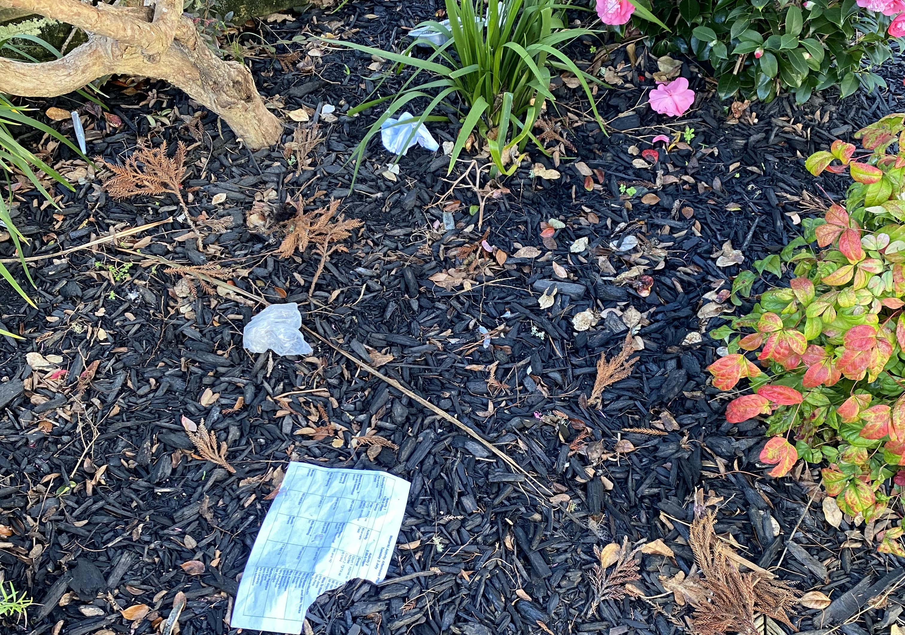
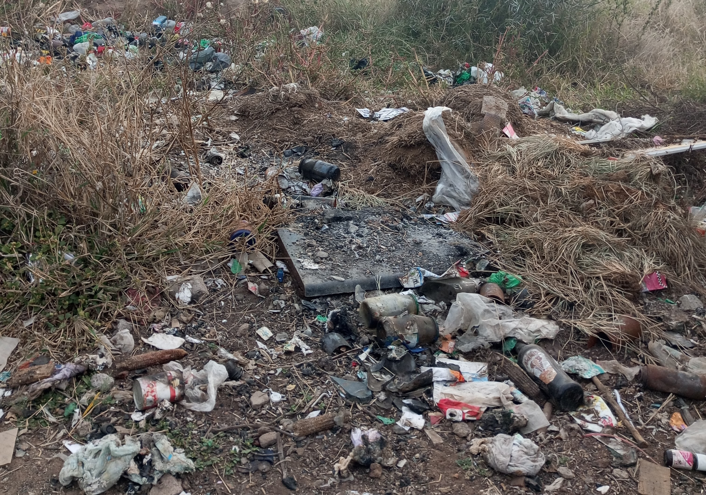
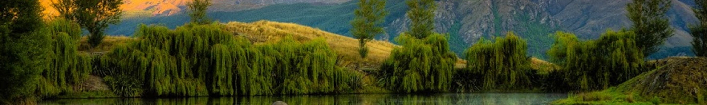

Explore Our Pages

Rodney College Waste
Learn about the Waste in Rodney College. Learn
how you can take your part in making a cleaner
brighter future for Rodney College.
how you can take your part in making a cleaner
brighter future for Rodney College.

Kaipara Waste
Learn about the current waste issue in the Kaipara.
Learn about the Waste to Energy project, an
alternative to landfills.
Learn about the Waste to Energy project, an
alternative to landfills.

New Zealand Waste
Learn about the amount of waste in New Zealand,
the main sources of waste, and number of waste
facilities in New Zealand.
the main sources of waste, and number of waste
facilities in New Zealand.
How You can Make a Difference
To help stop rubbish pollution in New Zealand, there are simple actions we can all take. Start by reducing the amount of waste you create,
buy products with less packaging, use reusable bags, bottles, and containers, and avoid single-use plastics. Make sure to recycle properly
by sorting materials like paper, glass, and plastics into the right bins. Dispose of rubbish responsibly, and never litter. You can also
participate in local clean-up events to help keep our parks, beaches, and streets clean. By making small changes in our daily habits, we
can all play a part in reducing pollution and protecting New Zealand's natural beauty.

0
Tonnes of Waste Produced this Year
Recycling
Recycling in New Zealand is important for keeping our country clean and green. By learning how to recycle
properly, we can all help reduce waste and protect the environment. It's easy to start, just make sure you
know what items can be recycled, like paper, glass, plastics, and cans. Some things, like soft plastics and
food scraps, need to be thrown away differently. By sorting our rubbish correctly, we use fewer landfills
and save important resources. Together, we can make New Zealand a cleaner and healthier place for everyone.
Contact Information
Email:
wastewiserc@gmail.com
Phone Number:
First Contact: 022 021 0738
Second Contact: 027 422 3055